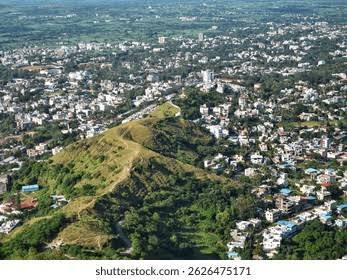
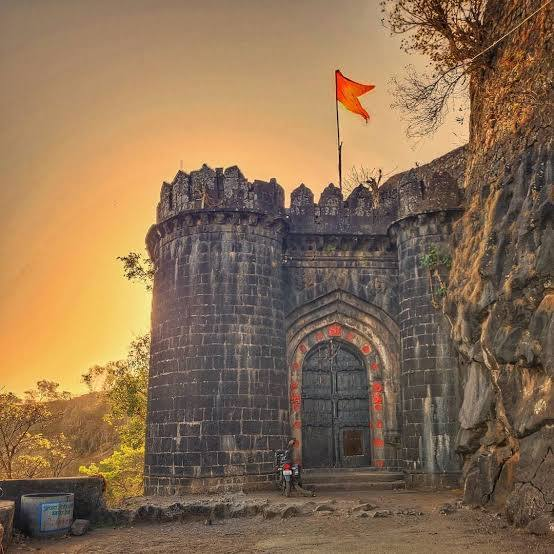
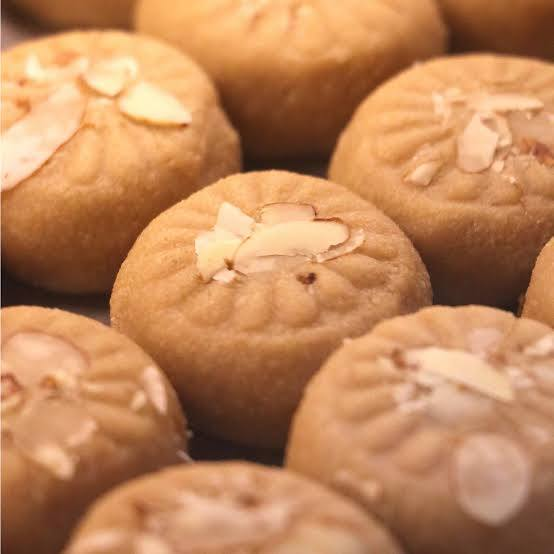
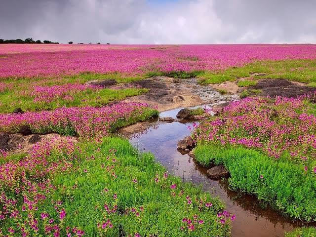
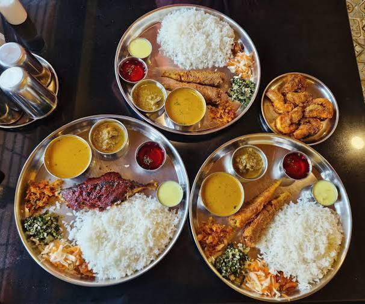
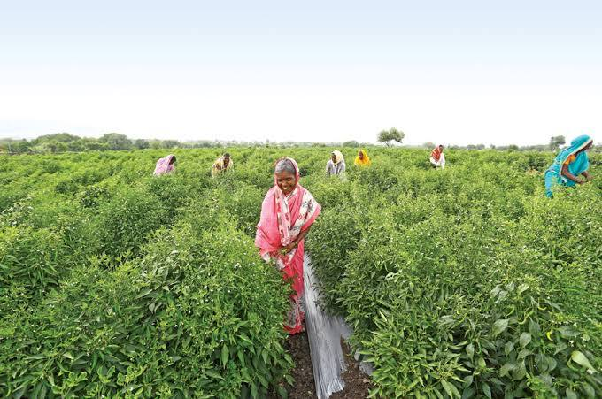
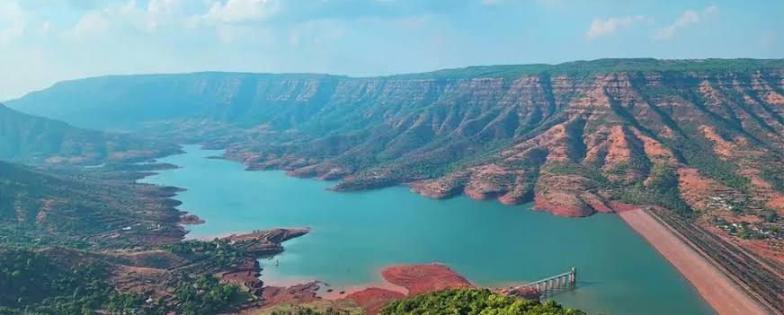
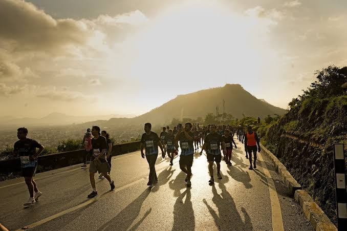

About

Satara is a beautiful city in Maharashtra, India. Its name means "Seven Hills" because seven big hills surround the town. Long ago, it was the main home of the brave Maratha Empire.Today, people love Satara for its amazing nature. It is home to the famous Kaas Plateau. Every monsoon, this flat hilltop fills with millions of colorful wildflowers. Satara also has huge waterfalls, old stone forts, and tasty sweet treats called Kandi Pedha. It is a wonderful place where deep history meets natural beauty.
- Location:Satara District, Western Maharashtra, India (positioned near National Highway 48, about 115 km south of Pune).
- Famous as: The "Capital of the Maratha Empire," "Soldier's City," and home to the UNESCO World Heritage Kaas Plateau.
- Major sectors: Agriculture (specifically sugarcane, grapes, and strawberries), tourism, and manufacturing (including engineering goods and textile industries).
- Climate: Tropical wet and dry climate (featuring hot summers, a heavy monsoon season from June to September, and mild, pleasant winters).
History

Satara has a proud and royal past. Its story began long ago in the 12th century when kings built strong forts on the hills. Later, Satara became famous as the capital of the mighty Maratha Empire. Great rulers, like Chhatrapati Shivaji Maharaj and Chhatrapati Shahu Maharaj, lived here and walked these lands. The city's name itself comes from the seven forts that protected it. Satara is also known for its brave freedom fighters who fought hard during India's struggle for independence. Today, the ancient forts and old palaces still stand as symbols of this land's courage and glory.
- Ancient Roots: Originally part of the ancient Rashtrakuta and Yadava kingdoms, with early 12th-century roots tied to the Silahara dynasty who built the region's first hill forts.
- Key Rulers: Chhatrapati Shivaji Maharaj, Chhatrapati Shahu Maharaj, the Peshwas, and the later Bhosale rulers of the Maratha Empire.
- Historic Sites: Ajinkyatara Fort, Sajjangad Fort, the Rajwada (Old Palace), and the historical Pratapgad Fort.
Culture

The culture of Satara is full of life, respect, and deep traditions. The people here celebrate festivals with great joy, especially Ganeshotsav and Diwali. Satara is also famous for its folk arts, like the energetic Lavani dance and traditional Marathi theater. Food is a huge part of the local lifestyle, and the city is known all over India for Kandi Pedha, a rich and delicious milk sweet. People in Satara are deeply connected to their roots, honoring the legacy of the Maratha warriors through local sports, martial arts, and a warm, welcoming community spirit.
- Main Festivals: Ganeshotsav, Diwali, Shivaji Jayanti, and the annual local Yatras (temple fairs).
- Traditional Arts: Lavani folk dance, Marathi theater (Natak), and traditional wrestling (Kusti).
- Language: Marathi (Local dialects)
Tourism

Satara is a dream destination for travelers who love nature and adventure. The city's biggest pride is the Kaas Plateau, a stunning natural wonder that bursts into a sea of colorful wild blossoms after the rains. Nature lovers can also marvel at the tall, roaring Thoseghar Waterfalls and the peaceful valleys of Mahabaleshwar nearby. For history buffs, the ancient hilltop forts of Ajinkyatara and Sajjangad offer breathtaking views and exciting hiking trails. From misty green mountains to spiritual shrines, Satara has something beautiful for every traveler to discover.
- Kaas Plateau: The famous UNESCO World Heritage site known for its stunning seasonal wildflower blooms.
- Ajinkyatara Fort: The historic fort sitting right in the middle of Satara city, offering panoramic views.
- Sajjangad Fort: A peaceful pilgrim site and fort located just on the outskirts of the city.
- Thoseghar Waterfalls: A breathtaking spot featuring a series of massive, roaring waterfalls close by.
Famous Food

Satara is a paradise for food lovers, offering a delicious mix of sweet treats and spicy local dishes. The city is famous across India for Kandi Pedha, a rich, sweet milk treat made using traditional methods for over a century. If you love savory food, Satara is known for its authentic Maharashtrian Thali, featuring spicy mutton or chicken dishes like Tambda Rassa (red gravy) and Pandhra Rassa (white gravy). For a quick snack, you can always enjoy a hot plate of Batata Vada or Misal Pav. Every bite in Satara gives you a true taste of local culture and warmth.
- Famous dishes: Kandi Pedha, Misal Pav, Batata Vada, and authentic Maharashtrian Thalis (featuring Tambda and Pandhra Rassa).
- Local Specialty: Satari Kandi Pedha (a uniquely rich, wood-fire-cooked milk sweet with a distinct browned flavor).
Economy

The economy of Satara is powered by a strong mix of farming, tourism, and growing industries. Agriculture is the main backbone, with the region producing huge amounts of sugarcane, grapes, and world-famous Mahabaleshwar strawberries. Thanks to its location along the busy national highway, Satara has also become a hub for manufacturing, hosting large factories for engineering goods, auto parts, and textiles. Additionally, millions of travelers visit the city's historic forts and natural wonders every year, making tourism a major source of income and jobs for the local community.
- Key Industries: Engineering Goods, Automobile Component Manufacturing, Textile Processing, and Eco-Tourism.
- Main Crops: Sugarcane, Strawberries, Grapes, Rice, and Jowar (Sorghum).
Environment

Satara is blessed with a rich and green environment that showcases nature at its best. Nestled in the Western Ghats mountain range, the region is highly valued for its incredible biodiversity and lush forest areas. The local climate features heavy monsoon rains that feed the major Krishna and Venna rivers, keeping the landscape fresh and fertile. Satara takes great pride in protecting its ecological treasures, especially the fragile eco-system of the Kaas Plateau, which is safely guarded to protect rare plants and unique wild orchids from human impact.
- Climate: Tropical wet and dry climate, with hot summers, a heavy monsoon season from June to September, and cool, pleasant winters.
- Key Rivers: Krishna River, Koyna River, Venna River, and Vasna River.
- Protected Areas: Kaas Plateau (UNESCO Eco-Sensitive Zone), Koyna Wildlife Sanctuary, and Sahyadri Tiger Reserve.
Sports

Satara has a deep-rooted and passionate sports culture that emphasizes strength, discipline, and community spirit. The region is widely famous for its love of traditional Indian wrestling, known as Kusti, and has produced many legendary wrestlers who train in local mud pits called Talims. Beyond traditional games, Satara has carved out a unique name for itself in modern athletics. It hosts the world-renowned Satara Hill Hill Marathon, an elite running event that attracts thousands of runners from across the globe to challenge its steep mountain slopes. Whether it is local kabaddi matches or long-distance running, the people of Satara possess an active and highly competitive spirit.
- Traditional Sports: Kusti (Indian mud wrestling), Kabaddi, and Kho-Kho.
- Key Venues: Shrimant Chhatrapati Shahu District Sports Complex (Sadar Bazar), Shahu Stadium, and local Talims (traditional wrestling training centers).
- Focus: Long-distance hill running (centered around the annual Guinness World Record-holding Satara Hill Half Marathon (SHHM)), promoting grassroot fitness, and nurturing professional wrestlers